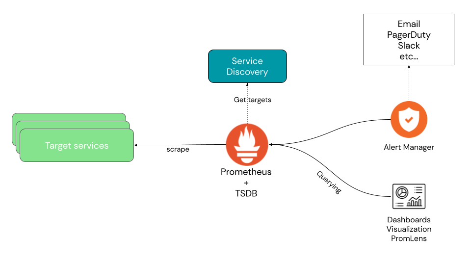
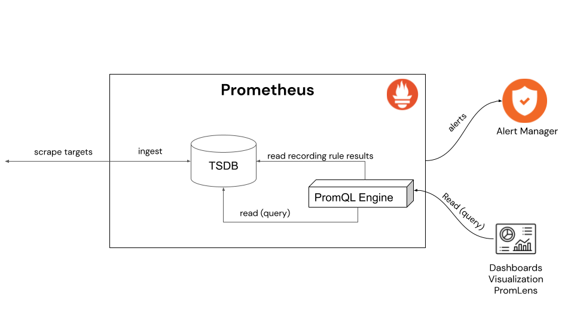
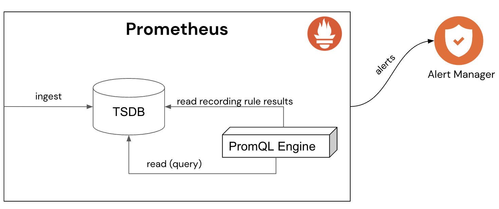
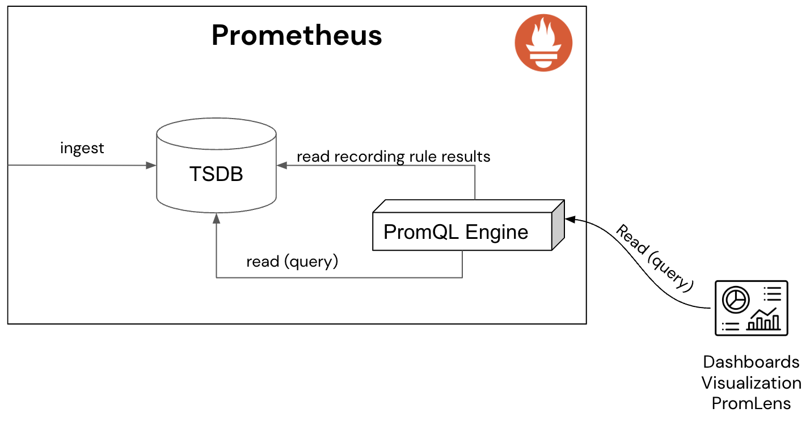
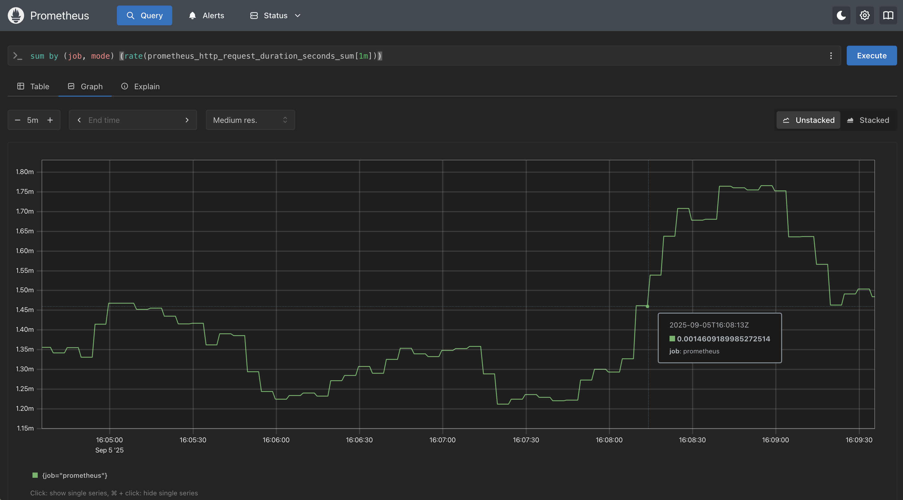
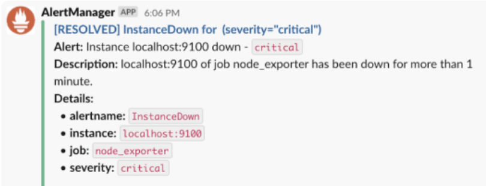
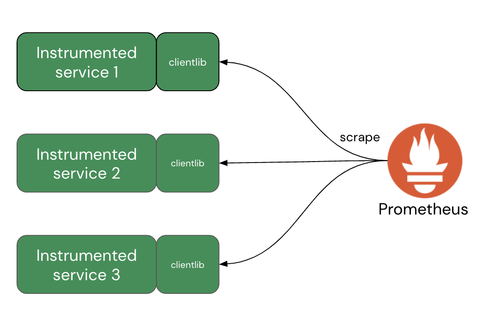

Lab 3 - Introduction to the Query Language
Lab Goal
This lab introduces the Prometheus Query Language (PromQL) giving you an introduction and sets up a demo project to provide more realistic data for querying.
Prometheus - What query language?
A query language is needed by Prometheus to be able to send requests to the stored metrics
data. This is allowing users to gain ad-hoc insights, build visualizations and dashboards from this
data, and be able to report (alert) when incoming data indicates that systems are not performing
as desired.
This language is called PromQL and provides an open standard unified way of selecting, aggregating, transforming, and computing on the collected time series data. Note that this language provides only READ access to the collected metrics data, while Prometheus offers a different path to WRITE access.
This language is called PromQL and provides an open standard unified way of selecting, aggregating, transforming, and computing on the collected time series data. Note that this language provides only READ access to the collected metrics data, while Prometheus offers a different path to WRITE access.
PromQL - Proving PromQL compliance?
PromQL is an open standard in that it's widely integrated by many vendors in their products. This
begs the question, how can I be sure that a product is 100% compatible with the real open source
PromQL found in the Prometheus project?
To answer this question, the PromQL Compliance Tester was added to the larger Prometheus compliance project. Follow the documentation, and you can test any vendor you like, or you can browse one of the formatted results published online.
To answer this question, the PromQL Compliance Tester was added to the larger Prometheus compliance project. Follow the documentation, and you can test any vendor you like, or you can browse one of the formatted results published online.
PromQL - Prometheus architecture
Remember the overview architecture of Prometheus as it was presented in the first introduction?
The next slide will expose the Prometheus query engine:

PromQL - Query engine architecture
Taking a closer look here at our Prometheus internals, we find the ingested time series data
(metrics) are scraped from configured targets and stored in the TSDB. An internal PromQL engine
supports our ability to query that data. All queries are in read-only access. The query
engine supports both internal and external queries. Let's take a look at some
rule terminology before we dig any further:

Intermezzo - Defining queries and rules
Before we get too deep into PromQL, let's look closer at the various rule terminology you'll
be covering. First a query and rule:
- Query - a PromQL query is not like SQL (SELECT * FROM...), but consist of nested functions with each inner function returning the data described to the next outer function.
- Rule - a configured query to gather data and evaluate, either as a recording rule or an alerting rule.
Intermezzo - Recording and alerting rules
Next the recording rule and alerting rule, essential to complexer actions:
- Recording rule - used to pre-query often used data or computationally expensive expressions and save the results for faster execution of queries later. Useful for queries used in dashboards (refreshed often).
- Alerting rule - defines an alert condition based on PromQL expressions, when fired cause notifications to be sent to external services.
Intermezzo - Aggregation and filtering
Finally, a look at aggregation and filtering, very important to optimizing both the execution
and trimming excessive unused data metrics:
- Aggregation - using operators that support combining elements from a single function, resulting in new results with fewer elements by combining values (SUM, MIN, MAX, AVG...)
- Filtering - the act of removing metrics from a query result by exclusion, aggregation, or applying language functions to reduce the results.
PromQL - Prometheus internal queries
Now to how internal queries to Prometheus run. Recording and alerting rules are executed on a
regular schedule to calculate rule results, such as an alert needing to fire. As you configure
new rules, these activities happen automatically:

PromQL - The external queries
Queries can be sent externally to Prometheus using the
Prometheus API (HTTP).
External users, user interfaces (UIs), and dashboards are all examples of querying Prometheus
metrics using PromQL. This is also how Prometheus uses its built-in web console to run queries:

PromQL - Exploring a few use cases
While there are many use cases that PromQL can support, it's possible to group them into a few
more general ones. These are more common in your daily observability work, and we’ll explore
each one in more detail:
- Ad-hoc querying
- Dashboards
- Alerting
- Automation
PromQL use cases - Ad-hoc querying
This use case is about you running live queries against the collected time series data. Imagine
you are getting alerts while on-call
at your organization, you open the dashboard and the pre-configured display gives you some hints
as to the issue, but you want to dig specifically into some data points. That's when you write
your own ad-hoc query and execute it to view the data in a graph:

PromQL use cases - Dashboard queries
This use case is where you create a layout of queries in what is known as a dashboard. You design
your display of metrics, gauges, and charts you want to display for a specific user viewing
aspects of your systems. PromQL queries are used to collect data, here using the
Perses project (you'll learn
about dashboards later in this workshop) and embedded it in a dashboard view:

PromQL use cases - Alerting queries
The use of queries to watch your collected data for possible alerts is another use case. Prometheus
generates alerts based on queries such as this one looking for hardware failure:
groups:
- name: Hardware alerts
rules:
- alert: Node down
expr: up{job="node_exporter"} == 0
for: 3m
labels:
severity: warning
annotations:
title: Node {{ $labels.instance }} is down
description: No scrape {{ $labels.job }} on {{ $labels.instance }}.
PromQL use cases - Dispatching alerts
To make these alerts useful, you might want to dispatch them to Slack, PagerDuty, or some
other notification mechanism. Here is an example of what Slack might look like when you
dispatch an alert notification:

PromQL use cases - Query automation
When you are automating your processes you can run PromQL queries against Prometheus collected
data and make choices based on the results. A few examples you might consider:
- In a CI/CD pipeline, inspecting a deployment's stage health before full deployment.
- Kicking off a remediation process when a system alerts to a deteriorated state.
- Autoscaling to provision more infrastructure when increased load is detected.
Services demo - Query architecture
That's enough theory about queries for now, let's look at installing and running a services demo
project (source:
with thanks to this repository) that will allow you to query somewhat realistic scraped services
time series data. The architecture is simple:

Services demo - Metrics being generated
The services demo architecture shows the layout, but what are these services providing for
our Prometheus instance to collect metrics from? It's exporting synthetic metrics (specifically
designed metrics) about our simulated services, here's a few examples:
- HTTP API server exposing request counts and latencies
- Periodic batch job exposing timestamp and number of processed bytes
- Metrics: CPU usage, memory usage, size of disk, disk usage, and more
Options for installing services demo
There are three installation paths, one building the demo from the source project, one using a
container image, and one deploying onto a local Kubernetes cluster. Please click on the option
you want to use to continue with this workshop: